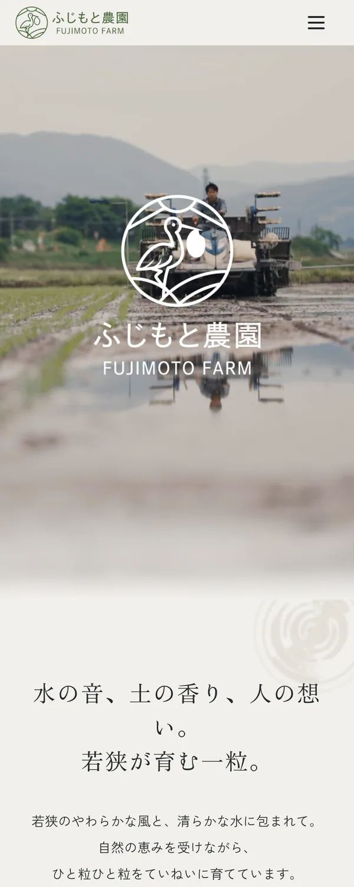

10年以上前に立ち上げた農業法人サイトのリニューアルを担当しました。「お米に対するこだわりや想いを、ユーザーにしっかり届けたい」というご相談を受け、ブランド設計から Web サイト制作まで一貫して担当しています。
従来はメール注文のみで運用されており、注文管理やユーザー導線にも課題がありました。ユーザー・運営者双方にとって使いやすい構造へ再設計し、ブランドの世界観を伝えながらスムーズに購入・問い合わせができる体験を設計しました。
一背景
既存サイトは立ち上げから10年以上が経過しており、ブランドとしての世界観や商品の魅力が十分に伝わっていない状態でした。
また、注文はメールで受け付けていたため管理負荷が高く、ユーザーにとっても購入導線が分かりづらいという課題がありました。
そこで、ブランドの想いや商品の価値を伝えながら、運用負荷を軽減し、ユーザーが迷わず購入・問い合わせできるサイトへの刷新を目指しました。
二課題
- 長年運用されていたサイトだったため、ブランドとしての世界観やお米へのこだわりが十分に伝わっていなかった
- お米の種類ごとの違いが写真だけでは分かりづらく、ユーザーが比較・選択しづらい状態だった
- 注文をメールで受け付けていたため、ユーザー導線や運用面で煩雑さがあり、購入までのハードルが高かった
- 一般ユーザーと飲食店事業者で求める情報が異なり、それぞれに最適な導線設計が必要だった
三デザインの意図
福井の自然豊かさや、お米づくりへのこだわりが伝わるよう、自然の空気感を感じられるビジュアル設計を行いました。
稲や水面をモチーフにした影表現を取り入れ、太陽を浴びて育つお米のイメージを表現しています。また、MV に動画を使用することで、生産者の空気感や人柄を直感的に伝え、安心感や信頼感につながる体験を設計しました。
四ロゴデザインの意図
圃場で毎年見ることができるコウノトリをモチーフに制作しました。
「このお米を食べてくれる方へ、少しでも幸せを届けたい」という想いを込め、幸せを運ぶ象徴としてコウノトリを採用しています。カラーは、実際の稲の色味をベースに設計しました。
五UI 設計
単に商品を並べるのではなく、お米へのこだわりや背景を理解した上で、自然に購入につながる体験を意識して設計しました。
まずブランドの世界観や生産者の想いを伝え、その後に商品情報や購入導線へつなげることで、理解・共感から購入へつながる流れを構築しています。
また、ユーザーが迷わず目的の情報へたどり着けるよう、情報の優先順位や導線整理を行い、直感的に理解しやすい UI 設計を意識しました。

六課題の解決
- 商品情報やコンテンツ構成を整理し、ユーザーにとって理解しやすい情報設計へ再構築
- お米ごとの特徴をテキストや情報整理によって補足し、比較・選択しやすい構成へ改善
- ブランドの世界観を伝える動画やビジュアルを活用し、安心感や信頼感につながる体験を設計
- 購入・問い合わせまでの導線を整理し、スムーズに行動できるフローへ改善
- STUDIO を活用することで、クライアント側でも継続的に更新・運用しやすい構成を実現
七工夫したポイント
余白設計やタイポグラフィ、動画演出を活用し、ブランドの空気感が伝わる構成を意識しました。
写真だけでは伝わりづらい商品の違いについては、テキストの情報設計や比較の見せ方を工夫し、ユーザーが自分に合ったお米を選びやすい構成にしています。
また、一般ユーザーと飲食店事業者では求める情報が異なるため、導線や情報の見せ方を整理し、それぞれが必要な情報へ迷わずアクセスできる構造を設計しました。
さらに、更新や運用のしやすさも考慮し、クライアント側でも継続的に管理しやすい構成・実装を行っています。